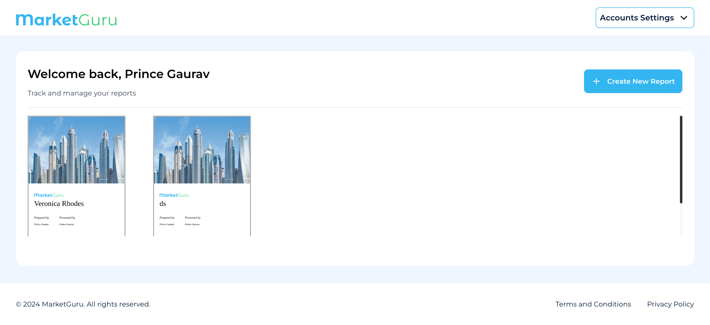

-
Createnewreport
14:33:16 / 00:00:20:341 Fail
Createnewreport
06.17.2024 14:33:16 06.17.2024 14:33:36 00:00:20:341 · #test-id=1FailUser creates a reportGiven the email and password field is open by click on the login optionWhen the user is logged in with the following credentialsemail hestabitt@gmail.com password Pa$$w0rd! When the user click on the sigin buttonThen the user should navigate to the dashboard pagestepDefinitions.Hooks.addScreenshot(io.cucumber.java.Scenario)User creates a reportWhen the user clicks on the create new report optionStep skippedThen the user should redirected to the creating report pageStep skippedAnd after creating report the user should redirected to the template pageStep skippedWhen the user enters enters the report name and report promptStep skippedThen report should be generatedStep skippedWhen the report is generated user use the functionality next previous and pagination on itStep skippedAnd if the functionality workStep skippedThen user click on the save option and after saving the fileStep skippedWhen the user clicks on the back to dashboardStep skippedThen the user should be redirected to the dashboardStep skipped
-
org.openqa.selenium.TimeoutException
1 tests
org.openqa.selenium.TimeoutException
1 failedStatus Timestamp TestName Fail 14:33:26 pm Then the user should navigate to the dashboard page Createnewreport.User creates a report.Then the user should navigate to the dashboard page
-
@Smoke
1 tests
@Smoke
1 failedStatus Timestamp TestName Fail 14:33:16 pm User creates a report Createnewreport.User creates a report
Started
Jun 17, 2024 02:33:15 pm
Ended
Jun 17, 2024 02:33:36 pm
Features Passed
0
Features Failed
1
Features
Scenarios
Steps
Timeline
Tags
| Name | Passed | Failed | Skipped | Others | Passed % |
|---|---|---|---|---|---|
| @Smoke | 0 | 1 | 0 | 0 | 0% |